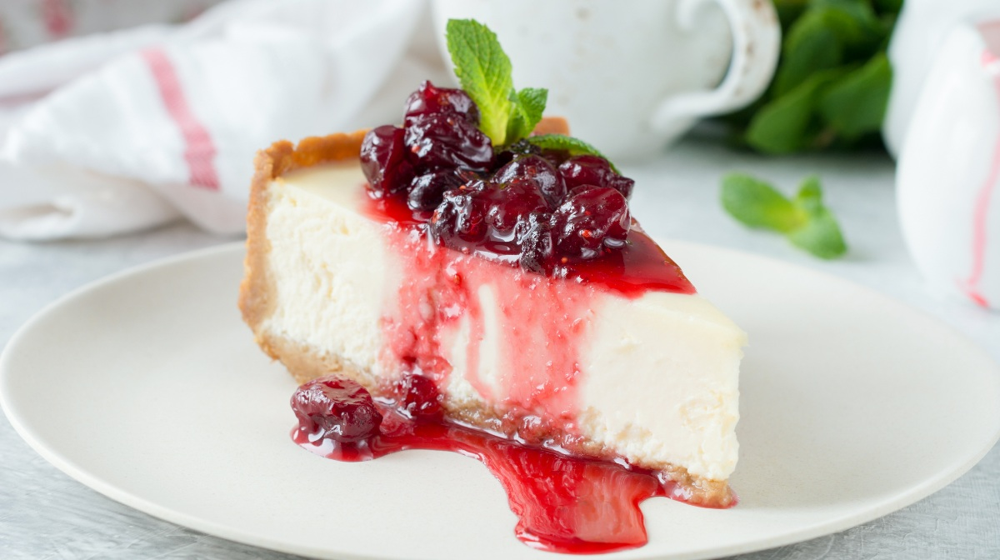
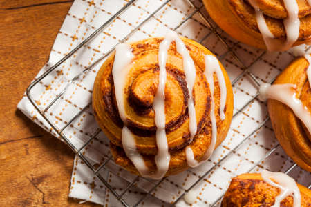
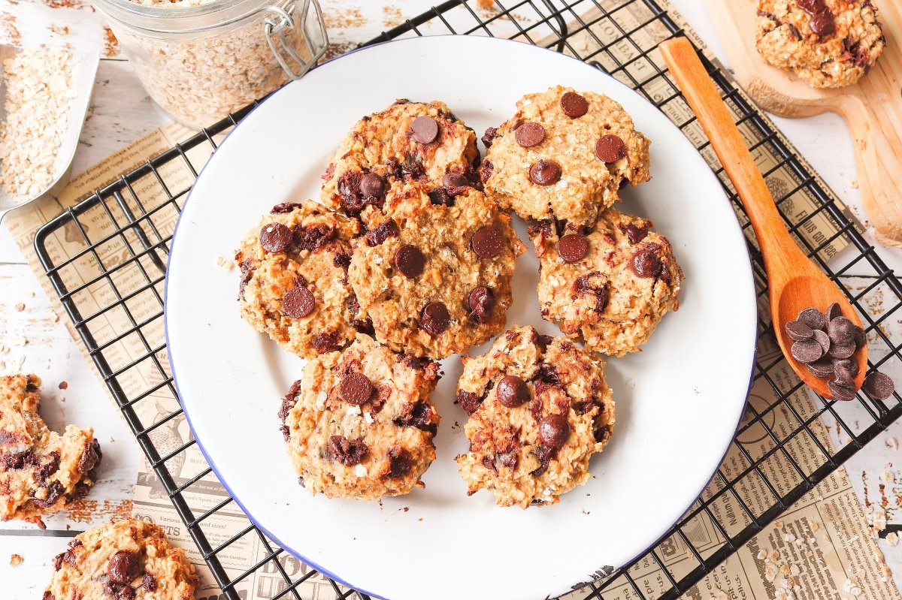

1. Tiramisú Clásico
Un suave y esponjoso postre italiano hecho con capas de bizcocho empapadas en café, crema de mascarpone y espolvoreado con cacao amargo.
Precio: Q45.00

2. Cheesecake de Frambuesa
Suave cheesecake cremoso sobre una base crujiente de galleta, cubierto con una deliciosa mermelada de frambuesas frescas.
Precio: Q50.00
3. Cinnamon Roll con Glaseado de Vainilla
Un rollo de canela recién horneado, esponjoso y aromático, cubierto con un glaseado de vainilla suave y cremoso.
Precio: Q35.00
4. Galletas de Avena con Chocolate
Galletas recién horneadas de avena, con trozos de chocolate negro y un toque de canela, perfectas para acompañar una taza de café.
Precio: Q25.00
